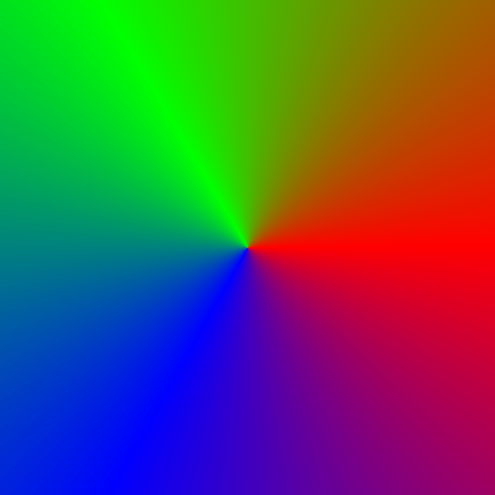
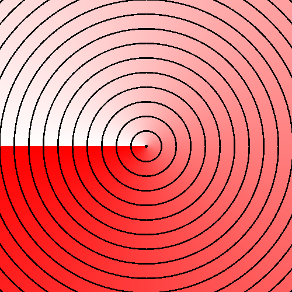
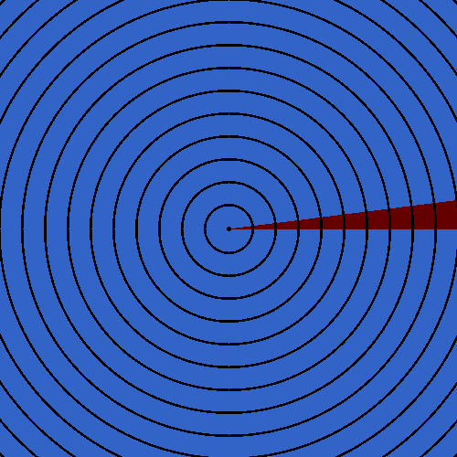
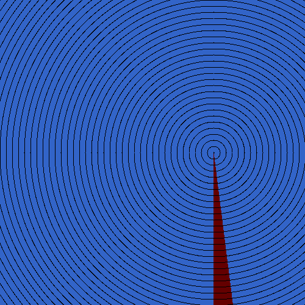
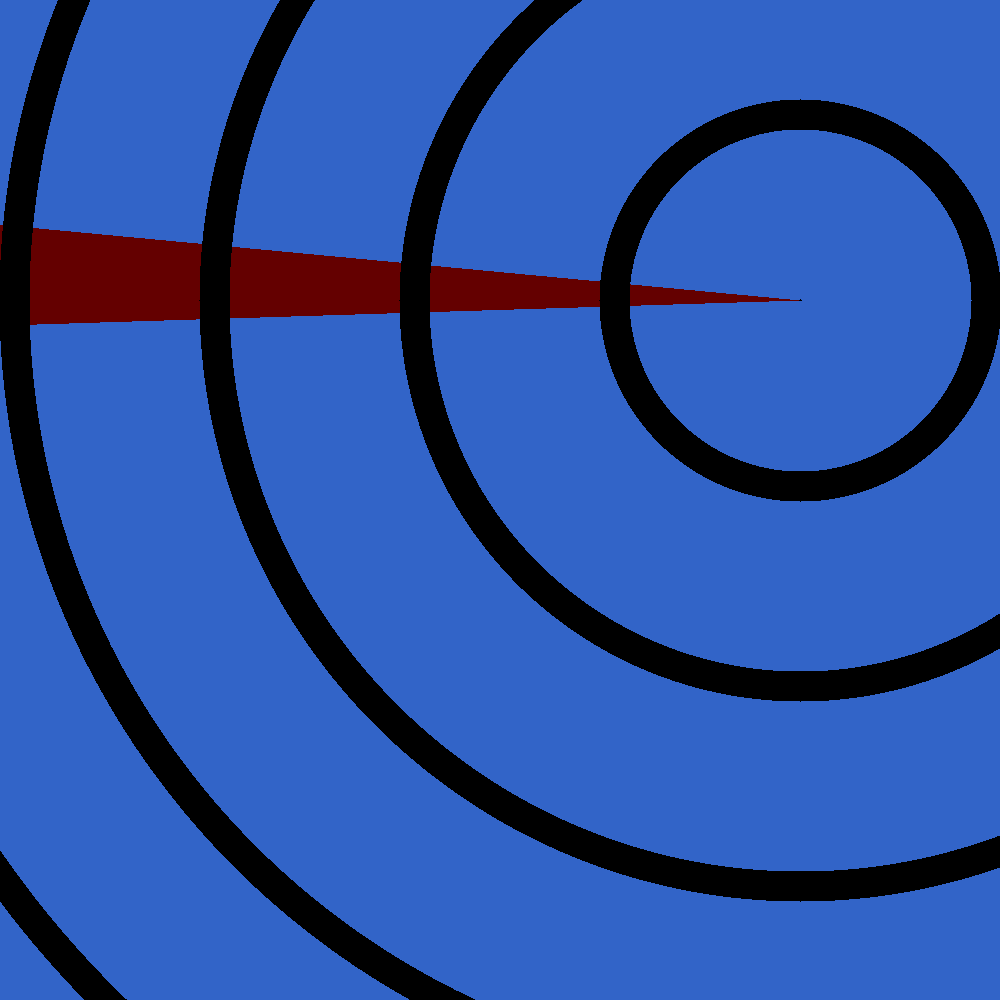

I initially came up with the idea for this document when I was reading Stein and Shakarchi’s Complex Analysis in high school. I don’t have the code I wrote back then, but there’s an older version I wrote some time in between on my github. I haven’t seen this idea anywhere else, but I wouldn’t be surprised if someone else came up with it as well.
The code for creating the images as well as the html page is on the github repo associated with this website,
https://github.com/yahya-tamur/complex-gifs
The code for the images is under the ’complex-gifs’ folder. In there, each image is created by a different binary in the ’examples’ folder, using the library in the ’src’ folder. It should hopefully be very easy to experiment and create your own images following the examples.
In the root directory, the ’doc’ folder contains the compiled document and the images, and the ’tex’ folder contains the source code for the document as well as scripts to compile the images as well as the document.
Thanks for reading!
I’ll refer to functions that take complex numbers and return complex numbers as complex functions. These are hard to graph, since they essentially take two variables (the real part and the imaginary part of a complex number) and return two variables (the real part and the imaginary part of a complex number). So, the most straightforward way to graph them would be four dimensional.
We can graph the real part and the imaginary part of the return value separately as functions of two variables, but these are often related in subtle ways, as I’ll show shortly.
One common way these functions can be defined is called domain coloring. We write complex numbers in polar form \((re^{i\theta } = r\cos (\theta ) + ir\sin (\theta ))\), and assign a color to every value of \(\theta \). We then graph the complex plane, assigning every point \((a,b)\) the color \(f(a + bi)\) represents. The following image graphs \(f(z) = z\), and we can see that \(\theta = 0\) is is assigned a color halfway between blue and green, \(\theta = \frac {\pi }{3}\) is blue, \(\theta = \pi \) is red.

The reason it’s a color wheel and not something like a gradient is because the colors can be the same value at \(0\) and \(2\pi \), so similar values of \(\theta \) are always similar colors.
Also, any information about \(r\) is not represented in this image, so sometimes contour lines are added. The image below colors a pixel black if \(|f(z)|\) is close to a whole number, resulting in contour lines, similar to topographical maps. The gradient also goes from red to white from \(-\pi \) to \(\pi \) to illustrate the previous point.

The novelty of this document is that instead of color, we represent each value of \(\theta \) as a point in time in a moving image. In the image below, \(\theta \approx 0\) is highlighted at first, and \(\theta \approx \pi \) is highlighted halfway through. Similarly to the first approach, similar values of \(\theta \) are treated similarly, since the difference between the last and the first frames is equivalent to the difference between the first and second frames.

Complex functions have a notion similar to differentiability in real numbers – a complex function is said to be holomorphic if the following limit exists:
\[f'(z) = \lim _{h \to 0} \frac {f(z+h) - f(z)}{h}\]
Here, \(h\) is a complex number, and the limit is defined as follows:
\[\lim _{z \to a}f(z) = L \text { means that for all } \epsilon > 0 \text {, there exists a } \delta \text { such that } |z - a| < \delta \text { implies } |f(z) - L| < \epsilon \]
And the modulus \(|z|\) here is defined as \(|a+bi| = \sqrt {a^2+b^2}\).
This is exactly the same way something like \(\lim _{(x,y) \to (a,b)} f(x,y)\) would be defined.
Similarly to the real case, having a derivative means that \(f(z)\) is approximately \(az + b\) for some \(a, b\) at any point.
In a more convenient form, it’s approximately \(a(z-b)\). \(z-b\) is exactly the function we’ve seen before except the origin moved to \(b\), and since \(r_1e^{i\theta _1} \times r_2e^{i\theta _2} = (r_1 r_2) e^{i(\theta _1 + \theta _2)}\), multiplying by \(a\) has the effect of the rotation starting at a different angle, and the contour lines having a different spacing:

\(f(z)=5i(z-2)\)

\(f(z)=0.5(z-(3+2i))\)